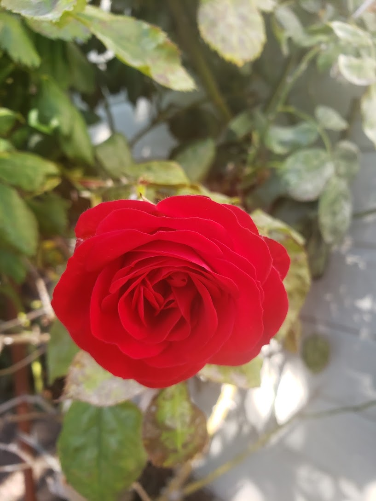

Experience in gathering user requirements, preparing and analyzing Business Requirement Documents (BRD), System Requirement Specification (SRS), Design Document and propose changes as per various internal and external requirements gathered for process improvement. Demonstrated ability to work actively in different phases of SDLC in teams, fostered cooperation and collaboration among individuals in the work unit and helped team resolve conflicts constructively Skilled in Use Cases and Unified Modelling Language (UML) for requirements gathering Competent in creating use case diagrams such as use case diagram, activity diagram, sequence diagrams and class diagram. Performed GAP Analysis between AS IS and TO BE workflow models. Experience in conducting Risk Analysis, SWOT analysis, Cost Benefit Analysis Strong database creation and query skills. Extensive experience in data validation by running SQL queries.